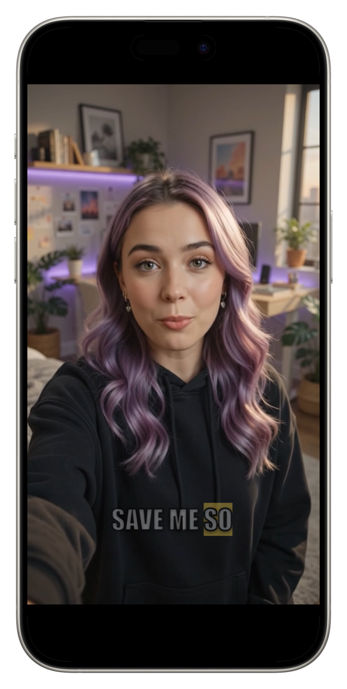

How to add subtitles to YouTube ShortsCómo poner subtítulos a YouTube Shorts
YouTube generates automatic captions for Shorts, but they are closed captions — off by default for many viewers, styled by YouTube, and shown in a fixed position you do not control.YouTube genera subtítulos automáticos para Shorts, pero son subtítulos opcionales — apagados por defecto para mucha gente, estilados por YouTube, y mostrados en una posición fija que no controlás.
For a format that autoplays muted, that is not the same thing as having captions.Para un formato que arranca solo y sin sonido, eso no es lo mismo que tener subtítulos.

Closed captions are opt-in, burned captions are notLos subtítulos opcionales dependen del que mira, los quemados no
YouTube's automatic captions have to be turned on. A large share of viewers never touch that setting, so for them your Short plays silent and wordless.Los subtítulos automáticos de YouTube hay que activarlos. Una buena parte de la gente nunca toca ese ajuste, así que para ellos tu Short se reproduce mudo y sin palabras.
Burned-in captions do not ask. They are part of the picture, so the first second of your video communicates whether or not anyone has changed a setting.Los subtítulos quemados no piden permiso. Son parte de la imagen, así que el primer segundo de tu video comunica sin importar si alguien cambió un ajuste.
The Shorts safe zoneLa zona segura de Shorts
- Bottom ~15%: title, channel name and the Shorts remix bar. Text here is covered.Abajo ~15%: título, nombre del canal y la barra de remix de Shorts. El texto acá queda tapado.
- Right ~12%: like, dislike, comment, share and the sound icon.Derecha ~12%: me gusta, no me gusta, comentar, compartir y el ícono de sonido.
- Top: occasionally a header, plus the device status bar.Arriba: a veces un encabezado, más la barra de estado del dispositivo.
- Aim for the middle to lower-middle of the frame, centred, and check it full screen rather than trusting a small preview.Apuntá al centro o al tercio medio-bajo del cuadro, centrado, y verificalo en pantalla completa en lugar de confiar en una vista previa chica.
Do bothHacé las dos cosas
Burned captions are for the viewer. YouTube's automatic transcript is for search — YouTube reads it to understand what your Short is about, and it powers accessibility features that burned text cannot.Los subtítulos quemados son para el que mira. La transcripción automática de YouTube es para la búsqueda — YouTube la lee para entender de qué trata tu Short, y alimenta funciones de accesibilidad que el texto quemado no puede.
So burn your styled captions into the file and leave YouTube's automatic captions on. They serve different jobs and they do not conflict.Así que quemá tus subtítulos con estilo en el archivo y dejá activados los automáticos de YouTube. Cumplen trabajos distintos y no chocan entre sí.
How to do it in CharlatanCómo hacerlo en Charlatan
- Import or record the clip in Charlatan and let it transcribe on the device.Importá o grabá el clip en Charlatan y dejá que transcriba en el teléfono.
- Select 9:16 so the frame matches what Shorts will display.Elegí 9:16 para que el cuadro coincida con lo que va a mostrar Shorts.
- Style the captions and drag them clear of the bottom 15% and the right-hand button strip.Estilá los subtítulos y arrastralos lejos del 15% inferior y de la franja de botones de la derecha.
- Use the fullscreen preview to confirm nothing collides with where the interface will be.Usá la vista previa a pantalla completa para confirmar que nada choque con donde va a estar la interfaz.
- Export and upload. Leave YouTube's own automatic captions enabled for search and accessibility.Exportá y subí. Dejá activados los subtítulos automáticos de YouTube para búsqueda y accesibilidad.
Questions people also askLo que también preguntan
Does YouTube add subtitles to Shorts automatically?¿YouTube pone subtítulos a los Shorts automáticamente?
It generates automatic closed captions from the audio, but viewers have to turn them on, and you cannot change how they look or where they sit. Burned-in captions are always visible and always styled the way you chose.Genera subtítulos automáticos opcionales a partir del audio, pero el que mira tiene que activarlos, y no podés cambiar cómo se ven ni dónde van. Los subtítulos quemados siempre se ven y siempre están estilados como los elegiste.
What size should a YouTube Short be?¿Qué tamaño tiene que tener un YouTube Short?
1080 x 1920, which is 9:16 vertical, up to three minutes. Exporting at that ratio means YouTube has nothing to crop, which is what usually clips captions placed near an edge.1080 x 1920, que es 9:16 vertical, hasta tres minutos. Exportar en esa proporción hace que YouTube no tenga nada que recortar, que es lo que suele cortar los subtítulos puestos cerca de un borde.